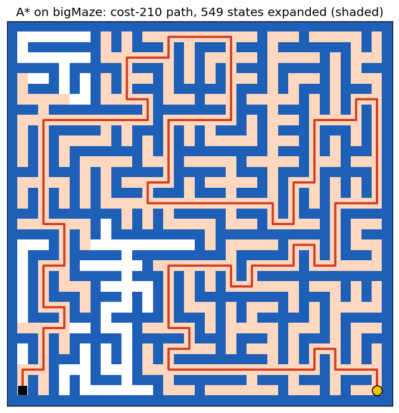
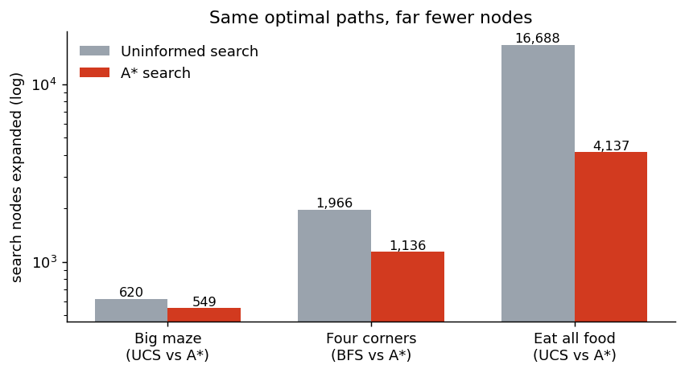

Teaching Pacman
to Plan.
General-purpose graph search for Pacman: DFS, BFS, uniform-cost and A*, then harder problems (visit all four corners, eat every dot) that need a custom state representation and admissible heuristics. My A* heuristics find the same optimal paths while expanding up to 75% fewer nodes.
HeadlineOptimal paths with 75% fewer nodes on the eat-all-food problem · autograder 25/25 plus the bonus point for the food heuristic
- Course
- CS 188, Introduction to Artificial Intelligence
- Project
- Project 1: Search
- Timeline
- Summer 2026, UC Berkeley
- Topics
- DFS, BFS, UCS, A*, heuristics
Overview
Pacman has to find his way through a maze, then solve two harder versions: touch all four corners, and eat every food dot. All of them are framed as search problems (states, actions, costs, goal test), so one set of search algorithms solves every layout. The challenge is making search fast enough without giving up the shortest path.
Approach
- One generic graph search. DFS, BFS, uniform-cost search and A* share the same loop and a closed set that prevents re-expanding states. Only the frontier changes: a stack, a queue, or a priority queue ordered by path cost, or by cost plus heuristic for A*.
- Design the state for the corners problem. A state is Pacman’s position plus which corners have been visited. That is just enough information to know when the goal is reached, and no more, which keeps the state space small.
- Corners heuristic. The Manhattan distance to the farthest unvisited corner. Pacman has to get there eventually, and walls only make the trip longer, so it never overestimates (admissible) and stays consistent.
- Food heuristic. The true maze distance to the farthest remaining dot. It is still a lower bound on the remaining cost, but much tighter than straight-line distance because it accounts for walls.
- Fast, near-optimal fallback. For huge boards, a greedy agent repeatedly runs BFS to the closest dot. It gives up guaranteed optimality to finish instantly.
Admissible: h(n) ≤ h*(n) Consistent: h(n) ≤ c(n, n′) + h(n′)
Results
| Problem | Uninformed | A* with my heuristic | Path cost |
|---|---|---|---|
| Big maze | UCS: 620 nodes | 549 nodes (Manhattan distance) | 210 (optimal) |
| Four corners (medium) | BFS: 1,966 nodes | 1,136 nodes | 106 (optimal) |
| Eat all food (tricky) | UCS: 16,688 nodes | 4,137 nodes | 60 (optimal) |
| Eat all food (big board) | — | Greedy closest-dot | 350 (fast, not optimal) |
The food heuristic expanded 4,137 nodes, under the 7,000-node bonus threshold, for a final autograder score of 26/25.


What I learned
- The frontier is the algorithm. DFS, BFS, UCS and A* turned out to be the same code with a different data structure. Seeing that made the trade-offs between them concrete.
- A good heuristic is a relaxed problem. Both heuristics come from ignoring part of the problem (walls, or all but the farthest goal). Relaxing less gave a tighter bound and cut the search by three quarters.
- State design decides the difficulty. Storing only the visited corners, not the whole path, kept the corners problem small enough to solve optimally.
- Optimality has a price. On the biggest boards, a greedy plan that finishes instantly beats an optimal plan that never finishes.